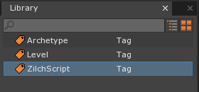
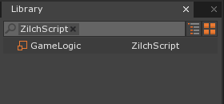
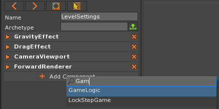

Scripting
This lesson introduces basic scripting using Zilch in the Zero Engine, including printing to the Console Window, if statements, else statements, variables, Strings, string interpolation, and randomly generating numbers.
Create a New Project
Add a new ZilchScript resource named: GameLogic
The newly created GameLogic script should open in a new tab next to the Level tab, and it should appear in the Library Window:
 
We can use ZilchScripts to write code using the Zilch programming language. Then we can add these scripts to our game objects as components.
Comments
Comments allow us to leave notes to ourselves and others reading our code in our human language (instead of the programming language) so that we can quickly understand what we were doing. Commenting not only allows us to write the logic behind what we are doing beforehand, but it helps us quickly remember what the code was for when we haven’t looked at in a long time. We create comments in Zilch by placing // at the beginning of the comment; it extends until the end of the line. The comment will be ignored when the script is processed, so it doesn’t affect the script’s functionality.
You can see some code “commented out” in your generated file inside the Initialize function.
In the GameLogic ZilchScript Window
In the Initialize function
- Change:
//Zero.Connect(this.Space, Events.LogicUpdate, this.OnLogicUpdate);
to
// This is a comment.- Change:
A comment does not affect the program, but allows me to leave notes to myself.
Printing
Now we will print to our Console Window using Zilch’s Console library. We will print a number in our GameLogic’s Initialize function.
- In the GameLogic ZilchScript Window
- In the Initialize function
- On the line after the comment
- Type:
Console.WriteLine(9001);
- Type:
- On the line after the comment
- In the Initialize function
This line of code will print the number 9001 in the Console Window. Don’t forget about the semicolon! Your GameLogic script should look like this:
class GameLogic : ZilchComponent
{
function Initialize(init : CogInitializer)
{
// This is a comment.
Console.WriteLine(9001);
}
function OnLogicUpdate(event : UpdateEvent)
{
}
}
Errors
If you make a mistake, such as putting an extra closing parenthesis at the end, you will get a compiler error that looks something like this:
Console Output:
Console.WriteLine(9001));
The statement must end with a semicolon. We found ')' but we expected to find ';'.
Errors occur the moment the compiler finds a symbol or word it doesn’t recognize in context. Therefore, when looking for your bug you should always investigate the code at or before the area indicated by the error. Always READ the errors. They are helpful! Here it doesn’t know what to do with a closing parenthesis when it did not see a matching open one come before it. It was expecting a semicolon right then. Note: Error messages clear upon typing or erasing within the script editor, but this doesn’t mean the error is gone. If you do not fix an error, the message will reappear the next time you compile (i.e. when you try to save or run your game).
A compiler is a program that translates code in a programming language to a different language. Usually it is translated into a language (object code) that an executable program can be made from.
Once your code is bug-free we can see the new component in action.
Running the Script
Let’s see our statement print to the console:
- Open the Console Window via the
Consolecommand - In the Console Window
- Press
Ctrl+Deleteto clear the console
- Press
- Press the
F5key to run the game
Now if we look at the Console Window, it should have printed the number. Why wasn’t the number printed? Oh! We forgot to add the script to an object. An object uses or calls the Initialize function on all of its components when it is first created. Since it wasn’t on any object it never got called, and our code wasn’t used.
Typically, when a script’s logic applies to all objects in a current level, we put it on that Level’s LevelSettings object:
Close the Game Window via:
Escapekey when in the Game Window OR the X button on the Game Window tabIn the Objects Window
In the Properties Window
Click the Add Component button
Type: GameLogic

Select GameLogic via: a
Left-Clickon the drop down list OREnter
Now if we look at the Console Window, it should have printed the number. This is the console output we should get:
Console Output:
Saved level file 'Level'. Compiling Zilch Library ---------------- End Game ---------------- Compiling Zilch Library ---------------- Begin Game ---------------- Compiling Zilch Library 9001 Level 'Level' was loaded. Loaded level 0.00s
Notice that after the game begins, our number is printed in the console. This lets us know that our script is working and that our Initialize function is getting called.
Order of Execution
- Go back to the GameLogic script via: Clicking on the GameLogic tab OR Double-clicking on the GameLogic script in the Library Window:
What else can we print? How about a message? Text between quotation marks can be stored by the computer; we call them Strings.
- In the GameLogic ZilchScript Window
- In the Initialize function
- On the line after
Console.WriteLine(9001);- Type:
Console.WriteLine("Here be dragons.");
- Type:
- On the line after
- In the Initialize function
Your Initialize function should look like this:
function Initialize(init : CogInitializer)
{
// This is a comment.
Console.WriteLine(9001);
Console.WriteLine("Here be dragons.");
}
Make sure your sentence, or String, is in between quotation marks!
- In the Console Window
- Press
Ctrl+Deleteto clear the console
- Press
- Save your project and run the game
- Stop the Game
Console Output:
Saved level file 'Level'.
Compiling Zilch Library
---------------- End Game ----------------
Compiling Zilch Library
---------------- Begin Game ----------------
Compiling Zilch Library
9001
Here be dragons.
Level 'Level' was loaded.
Loaded level 0.00s
Notice how the order of the print statements are in the same order we put the lines of code. This is because programs executes one statement at a time. If we were to switch the order of the lines, it would change the order they print in.
Random
Our program is static and does the same thing every time. Let’s add a little excitement, let’s roll a die.
- In the GameLogic ZilchScript Window
- In the Initialize function change your code to:
function Initialize(init : CogInitializer)
{
Console.WriteLine("Here be dragons.");
// Create a random number generator
var randNumGen = new Random();
// In honor of dragons and D&D, roll a d20:
var randNum = randNumGen.DieRoll(20);
// See what we rolled:
Console.WriteLine(randNum);
}
You’ll see you random number printed out in the Console Window.
- Rerun the game multiple times.
You should see that number printed is changing between runs.
Variables
Here you used the var keyword to make a variable.
Variables are like buckets. They are simple containers you can store stuff in. When you come back, the last thing you put inside it will still be there and you can change the contents of the bucket as you see fit. You can fill it with explicit items or literals, such as 3 or "Hello!". You can mimic the contents of another bucket via assignment, as in the following example:
var bucket1 = 8;
var bucket2 = 16;
var bucket3 = 4;
// Set bucket1 contents equal to bucket2's contents:
bucket1 = bucket2;
// bucket1 now has a value of 16
// bucket2 contents remains unchanged, having a value of 16
// Set bucket3's contents equal to the addition of bucket3 and bucket1's contents
bucket3 += bucket1;
// The value of bucket1 is still 16 because that is the last thing we stored in it, so:
// bucket3 += bucket 1 becomes:
// bucket3 = bucket3 + bucket1 becomes:
// bucket3 = 4 + 16
// The contents of bucket3 is now updated to 20.
Or you can use it as a container to receive the output of a function call, such as we did with the DieRoll function.
In this script, you’ve used variables to store the:
- object created by
new Random()and - the value returned by the DieRoll function
Because you had the ability to store the value from the DieRoll, you were able to pass it along to the Console.WriteLine function to see its value:
Console.WriteLine(randNum);
Conditionals
Let’s say we are a pretty average player and these are concerning dragons. If we roll a 1-10, we get burned by the fearsome dragon, if we roll 11-20 we slay the dragon. Knowing that rolling a d20 will give us a number between 1 and 20 we can check how the number compares to 11:
if the random number is less than: < 11 it must be between 1-10.
if the random number is greater than or equal to: >= 11 it must be between 11-20.
These comparison operators operate the same way they do in mathematics. These statements are either true or false. We will use these comparison operators in an if statement.
if statements
If statements take a boolean condition (something that evaluates to true or false), to determine whether or not it should run some code.
if (true)
{
// Code between these curly braces always gets run.
}
if (false)
{
// Code between these curly braces always gets skipped.
}
// Comparison operators can be used as boolean conditions
// because they result in true or false.
if (5 > 3)
{
// Code between these curly braces always runs
// because the value of 5 will always be greater than 3.
// This boolean condition will always result in true.
}
if (randomNumber > 3)
{
// Code between these curly braces may or may not run,
// it depends on the value stored in the randomNumber variable.
}
We can use these concepts to “fight” the dragon.
- In the GameLogic ZilchScript Window
- In the Initialize function change your code to:
function Initialize(init : CogInitializer)
{
Console.WriteLine("A Dragon attacks!");
// Create a random number generator
var randNumGen = new Random();
// In honor of dragons and D&D, roll a d20:
var randNum = randNumGen.DieRoll(20);
// See what we rolled:
Console.WriteLine("(you roll a `randNum`)");
// If we rolled a less than 11:
if (randNum < 11)
{
// We lose.
Console.WriteLine("Taking you by surprise, the dragon burns you to a crisp!");
}
// If we roll greater than 11:
if (randNum >= 11)
{
// We win.
Console.WriteLine("Dodging the dragon's fiery breath, you slay the dragon with your sword!");
}
}
When writing the value of randNum within a string, place the grave accent marks, ` (or tilde ~ key, found under Esc), around the variable’s name
You’ll see your story unfold in the Console Window.
- Rerun the game multiple times.
- Stop the Game
What if we want to reward great technical skill? Let’s alter the message when you’ve rolled a 20.
- In the GameLogic ZilchScript Window
- In the Initialize function change your code to:
function Initialize(init : CogInitializer)
{
Console.WriteLine("A Dragon attacks!");
// Create a random number generator
var randNumGen = new Random();
// In honor of dragons and D&D, roll a d20:
var randNum = randNumGen.DieRoll(20);
// See what we rolled:
Console.WriteLine("(you roll a `randNum`)");
// If we rolled a less than 11:
if (randNum < 11)
{
// We lose.
Console.WriteLine("Taking you by surprise, the dragon burns you to a crisp!");
}
// If we roll a 20:
if (randNum == 20)
{
// We win with style.
Console.WriteLine("Before the dragon can muster its fire, you slay the dragon with your sword!");
}
// If we roll greater than 11:
if (randNum >= 11)
{
// We win.
Console.WriteLine("Dodging the dragon's fiery breath, you slay the dragon with your sword!");
}
}
You’ll see your story unfold in the Console Window.
- Rerun the game until you roll a 20
- Stop the Game
Console Ouput:
---------------- End Game ----------------
Compiling Zilch Library
---------------- Begin Game ----------------
Compiling Zilch Library
A Dragon attacks!
(you roll a 20)
Before the dragon can muster its fire, you slay the dragon with your sword!
Dodging the dragon's fiery breath, you slay the dragon with your sword!
Level 'Level' was loaded.
Loaded level 0.0s
Here you can see that both win conditions ran as if two dragons attacked.
This is because both of the conditions were true:
when we rolled a 20 that mean the value in randNum was 20, so:
if (randNum == 20) became if (20 == 20) became if (true) so
Console.WriteLine("Before the dragon can muster its fire, you slay the dragon with your sword!"); ran
also:
if (randNum >= 11) became if (20 >= 11) became if (true) so
Console.WriteLine("Dodging the dragon's fiery breath, you slay the dragon with your sword!"); ran
else/else if statements
Once we’ve defeated the dragon, we don’t want to do it again. We can avoid this by only checking if necessary.
// When the boolean condition evaluates to true:
if (true)
{
// Code between these curly braces gets run.
}
else
{
// Code between these curly braces gets skipped.
}
// When the boolean condition evaluates to false:
if (false)
{
// Code between these curly braces gets skipped.
}
else
{
// Code between these curly braces gets run.
}
// when you have more conditions to check you can pair an else with another if:
if (randNumber == 20)
{
// Code between these curly braces may or may not run.
}
else if (randNumber >= 11)
{
// Code between these curly braces may or may not run.
}
else if (randNumber < 11)
{
// Code between these curly braces may or may not run.
}
Let’s fix our game by adding an else if statement:
- In the GameLogic ZilchScript Window
- In the Initialize function change your code to:
// If we didn't roll a 20 but did roll greater than 11:
else if (randNum >= 11)
{
// We win.
Console.WriteLine("Dodging the dragon's fiery breath, you slay the dragon with your sword!");
}
You’ll see your story unfold in the Console Window.
- Rerun the game until you roll a 20
- Stop the Game
Console Output:
---------------- End Game ----------------
Compiling Zilch Library
---------------- Begin Game ----------------
Compiling Zilch Library
A Dragon attacks!
(you roll a 20)
Before the dragon can muster its fire, you slay the dragon with your sword!
Level 'Level' was loaded.
Loaded level 0.00s
Now it works as intended and we’ve learned about variables, if, else, errors, printing, and strings.
On Your Own
Beside rewarding great technical skill, it is also common to acknowledge abysmal failure. Write another check for if you roll a 1, and print out a different message describing your unfortunate encounter with the dragon. Make sure the normal failure condition doesn’t run!
There are many different ways to approach the same problem when programming. Experiment with different comparison operators while maintaining the same functionality.
Comparison Operators < less than <= less than or equal to > greater than >= greater than or equal to == equality != inequality
| orphan: |
|---|